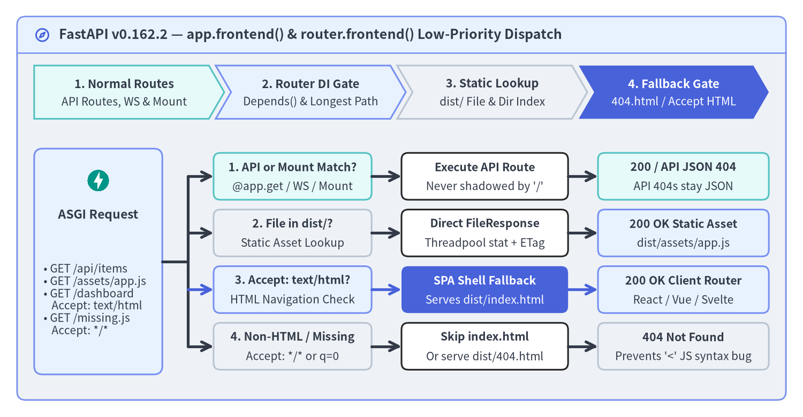
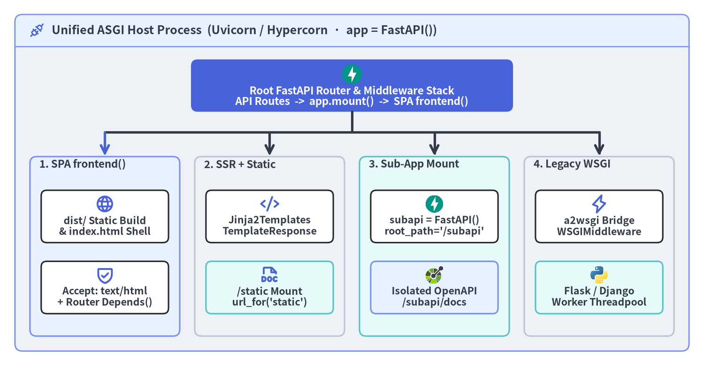

SPA frontend()・静的配信・テンプレート・マウント統合
FastAPI v0.162.2 は、新設された低優先度静的ルーティング機構 app.frontend() / router.frontend() を軸に、モダンな Single-Page Application（SPA）配信、サーバーサイド HTML テンプレート、独立した ASGI サブアプリケーション、そしてレガシー WSGI アプリの段階的移行を単一プロセス上でシームレスに統合します。

1. app.frontend() と router.frontend() によるネイティブ SPA 配信
従来、React・Vue・Svelte などのビルド成果物（dist/）を app.mount("/", StaticFiles(directory="dist", html=True)) でルート "/" に配信しようとすると、「先にマウントすると @app.get("/api/...") を覆い隠してしまう」「クライアントサイドルート（/dashboard/analytics 等）をブラウザでリロードすると 404 になる」という 2 つの課題がつきまとっていました。
FastAPI v0.162.2 では、app.frontend()（および app.router.frontend() / router.frontend()）によってこれらがフレームワーク標準機能として解決されました。"/" 配下を無差別に捕捉する貪欲な Mount ではなく、専用の 低優先度 SPA フロントエンドルーター として登録されるため、アプリケーション全体（インクルードされた全 APIRouter を含む）の API ルート・WebSocket・マウント・末尾スラッシュリダイレクトがすべて不一致だった場合にのみフロントエンド探索が実行されます。
| パラメータ / 指定値 | 既定値 | app.frontend() / router.frontend() の実行時挙動 |
|---|---|---|
fallback="auto" |
はい | directory 直下に 404.html があれば 404 で返し、なければ HTML ナビゲーション要求時に index.html（200）へフォールバック（どちらも無ければ 404） |
fallback="index.html" |
いいえ | 404.html が共存していても HTML ナビゲーション要求には常に index.html（200）を返却。check_dir 有効時は起動時に index.html の存在を検証 |
fallback="404.html" |
いいえ | 対象プレフィックス配下の未検出パスに対してカスタム静的 404.html をステータス 404 で返却。起動時にファイル存在を検証 |
fallback=None |
いいえ | フォールバックを無効化。実在するビルドファイルおよびサブディレクトリ index.html のみを配信し、未検出時は通常の JSON 404 を返却 |
check_dir="auto" |
はい | FASTAPI_ENV="development"（fastapi dev 実行時に自動設定）では警告のみで起動時チェックをスキップし、本番環境ではディレクトリ欠落時に RuntimeError で即時停止 |
グローバル優先順位・セグメント境界一致・ルーター DI 保護
自前のキャッチオール @app.get("/{full_path:path}") 実装では見落とされがちな以下の 4 つの安全設計が、組み込みの SPA フロントエンドルーターには標準装備されています。
- グローバル API 優先と API
404の保全:include_router()の登録順序に関わらず、通常の API ルート（@app.get、@app.post等）とWebSocketハンドラーが常に優先されます。@app.get("/api/items/{item_id}")にマッチした上でエンドポイントがHTTPException(404)を送出した場合も、SPA のindex.htmlにすり替わることなく JSON の404応答がそのまま返ります。 - ブラウザ HTML ナビゲーション判定（
Acceptヘッダー交渉）:index.htmlフォールバック時はAcceptヘッダーのメディアタイプと品質値（q）を厳密に解析し、text/htmlまたはapplication/xhtml+xml（q != 0）を明示的に受け入れるGET/HEAD要求のみindex.html（200 OK）を返します。存在しない JS バンドル（GET /assets/missing.js/Accept: */*）や API 誤 URL（Accept: application/json）には正しく404を返すため、<script>タグが HTML を読み込んでUnexpected token '<'で壊れる事故を防ぎます。 - セグメント境界での最長プレフィックス選択:
app.frontend("/", directory="site")とrouter.frontend("/admin", directory="admin_dist")を併用した場合、パスセグメント境界で一致判定を行い（/adminが/administrationを誤捕捉しない）、最も具体的なプレフィックスを選択します。 - 保護されたフロントエンドへの依存性注入（DI）適用:
router.frontend()はアプリ階層・include_router()・APIRouter(dependencies=[Depends(...)])の依存関数を外側から内側へ順に解決します。Cookie セッション検証、カスタムResponseヘッダー付与、BackgroundTasks、テスト時のapp.dependency_overridesがそのまま機能します。
from pathlib import Path
from fastapi import APIRouter, Depends, FastAPI, HTTPException, Request
from fastapi.testclient import TestClient
def build_spa_service(dist_dir: Path, admin_dist: Path) -> FastAPI:
app = FastAPI(title="Unified API + SPA Service")
@app.get("/api/items/{item_id}")
async def read_item(item_id: int) -> dict[str, object]:
if item_id == 0:
raise HTTPException(status_code=404, detail="Item not found")
return {"item_id": item_id, "source": "api"}
def require_admin_cookie(request: Request) -> None:
if request.cookies.get("__Host-admin_session") != "verified-session":
raise HTTPException(status_code=401, detail="Admin session required")
admin_router = APIRouter(dependencies=[Depends(require_admin_cookie)])
admin_router.frontend("/admin", directory=admin_dist, fallback="index.html")
app.include_router(admin_router)
# Low-priority SPA mount at "/" never shadows /api/* or /admin/*
app.frontend("/", directory=dist_dir, fallback="auto")
return app
2. SPA frontend()・テンプレート・マウント・WSGI の使い分け
1 つの FastAPI ASGI ホストプロセス上で、クライアントサイド描画（SPA）、Jinja2 によるサーバーサイド HTML 描画、サブチーム単位の独立 FastAPI アプリ、そして同期型 WSGI レガシー資産を適材適所で共存させることができます。

| 統合メカニズム | 登録 API | 優先順位とスコープ分離 | 最適なユースケース |
|---|---|---|---|
| SPA 静的ビルド配信 | app.frontend("/", directory="dist") |
最低優先度（全 API ルート不一致後に評価）・Depends() 対応 |
/api と同居する Vite / React / Vue / Svelte / 静的サイト |
| 名前付き静的マウント | app.mount("/static", StaticFiles(...), name="static") |
/static プレフィックスの Mount・url_for 対応 |
Jinja2 や自己配信 Swagger UI から参照する CSS / JS / 画像 |
| サーバーサイド描画 | Jinja2Templates(directory="templates") |
標準 HTTP ルート（response_class=HTMLResponse） |
HTMX フラグメント、メール本文生成、SEO 重視の SSR ページ |
| 独立サブアプリ | app.mount("/subapi", subapi) |
独立した FastAPI インスタンス（root_path="/subapi"・専用 /docs） |
マルチバージョン公開 API（/v2）、パートナー向け API、管理画面 |
| レガシー WSGI 統合 | app.mount("/v1", WSGIMiddleware(flask_app)) |
a2wsgi により同期 WSGI をワーカースレッド上で実行 |
Flask / Django モノリスから FastAPI への段階的マイグレーション |
3. Jinja2Templates と StaticFiles によるサーバーサイド HTML 描画
サーバーサイドレンダリング（SSR）や HTMX ベースの UI を構築する場合は、jinja2 パッケージを導入し、fastapi.templating.Jinja2Templates と名前付き StaticFiles マウントを組み合わせます。
- キーワード引数形式の
TemplateResponseシグネチャ: 現行の Starlette / FastAPI では必ずrequest=request, name="item.html", context={...}のキーワード引数形式で呼び出します（旧来の位置引数TemplateResponse("item.html", {"request": request})は非推奨化されています）。 url_forによる逆引きアセット URL 生成: マウント時にname="static"を指定すると、テンプレート内から{{ url_for('static', path='/styles.css') }}でroot_path対応の URL を安全に生成できます。- XSS 自動エスケープと属性クォートの徹底: Jinja2 は
.html/.htm/.xmlに対して既定でautoescapeを有効化します。HTML 属性に変数を埋め込む際は必ず二重引用符で囲み（data-item-id="{{ id }}"）、外部入力に対する安易な| safeフィルタの適用は避けてください。
from pathlib import Path
from typing import Annotated
from fastapi import FastAPI, Path as PathParam, Request
from fastapi.responses import HTMLResponse
from fastapi.staticfiles import StaticFiles
from fastapi.templating import Jinja2Templates
def create_ssr_app(static_dir: Path, templates_dir: Path) -> FastAPI:
app = FastAPI()
app.mount("/static", StaticFiles(directory=static_dir), name="static")
templates = Jinja2Templates(directory=templates_dir)
# templates/item.html:
# <link href="{{ url_for('static', path='/styles.css') }}" rel="stylesheet">
# <h1 data-item-id="{{ id }}">Item: {{ title }}</h1>
@app.get("/items/{id}", response_class=HTMLResponse)
async def read_item_page(
request: Request,
id: Annotated[str, PathParam(pattern=r"^[a-zA-Z0-9_-]+$")],
title: str = "Wireless Keyboard",
) -> HTMLResponse:
return templates.TemplateResponse(
request=request,
name="item.html",
context={"id": id, "title": title},
)
return app
4. 独立サブアプリケーションと a2wsgi によるレガシー WSGI 移行
独立サブアプリと ASGI root_path の自動伝播
ルート定義を単一の OpenAPI スキーマと共通ミドルウェア層へ統合する app.include_router() とは対照的に、app.mount("/subapi", subapi) は 完全に独立した別の ASGI アプリケーション を指定パス配下に接続します。
- OpenAPI スキーマと Docs UI の完全分離: 親アプリは親ルートのみを含む
/openapi.jsonと/docsを公開し、subapiは独自の/subapi/openapi.jsonと/subapi/docsを独立して提供します。 - ASGI
root_pathの自動設定: Starlette のMountがsubapi呼び出し時にscope["root_path"]へ"/subapi"を自動付与するため、/subapi/docsの Swagger UI はスキーマ取得先や「Try it out」の送信先 URL を自動的に/subapi/...基準で解決します。 lifespan実行に関する注意点: マウントされたサブアプリのlifespanイベントは Starlette のMountからは自動実行されません。共有リソースの初期化は親アプリのlifespanに集約するか、contextlib.AsyncExitStackでサブアプリの lifespan を明示的に連結してください（詳細は 大規模 DI・Lifespan 管理・テスト戦略 を参照）。
a2wsgi.WSGIMiddleware による段階的 WSGI 移行（ストラングラーパターン）
既存の Flask や Django モノリスを一括書き換えせずに段階的に FastAPI へ移行する場合、レガシー WSGI アプリを特定プレフィックスにマウントし、新規エンドポイントから順に外側の FastAPI 側で非同期実装していくストラングラーパターン（Strangler Fig Pattern）が有効です。Starlette 旧内蔵の starlette.middleware.wsgi.WSGIMiddleware は非推奨化されているため、FastAPI 公式ドキュメントでは a2wsgi.WSGIMiddleware（pip install a2wsgi）の利用が推奨されています。a2wsgi は非同期イベントループと同期 WSGI ワーカースレッド間のストリーム変換を安全に仲介し、マウントパスを SCRIPT_NAME として自動伝播します。
from a2wsgi import WSGIMiddleware
from fastapi import FastAPI, Request
from flask import Flask, jsonify, request as flask_request
# 1. Independent FastAPI sub-application with isolated /subapi/docs
subapi = FastAPI(title="Partner Sub-API", version="2.0.0")
@subapi.get("/sub")
def read_sub(request: Request) -> dict[str, str]:
return {
"message": "Hello from sub-application",
"root_path": request.scope.get("root_path", ""),
}
# 2. Legacy synchronous Flask (WSGI) application
flask_app = Flask(__name__)
@flask_app.get("/orders")
def legacy_orders():
return jsonify({"service": "legacy-flask", "script_name": flask_request.script_root})
# 3. Unified FastAPI host mounting both the sub-app and WSGI bridge
app = FastAPI(title="Main Gateway API", version="1.0.0")
@app.get("/app")
def read_main() -> dict[str, str]:
return {"message": "Hello World from main app"}
app.mount("/subapi", subapi)
app.mount("/v1", WSGIMiddleware(flask_app))
次節 Webhooks・Callbacks・SDK 生成・Docs UI では、OpenAPI 3.1.0 を活用した非同期イベント仕様の公開、クリーンなクライアント SDK 自動生成、および閉域網向け Swagger UI / ReDoc 自己配信パターンを解説します。リバースプロキシ配下での --forwarded-allow-ips 運用については FastAPI CLI・プロキシ・GraphQL・AI 連携 もあわせて参照してください。